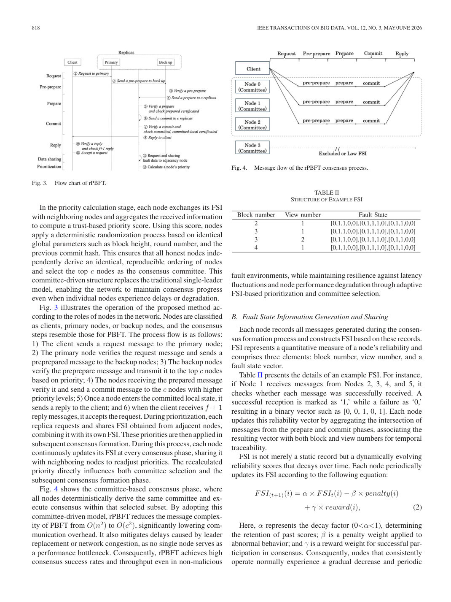
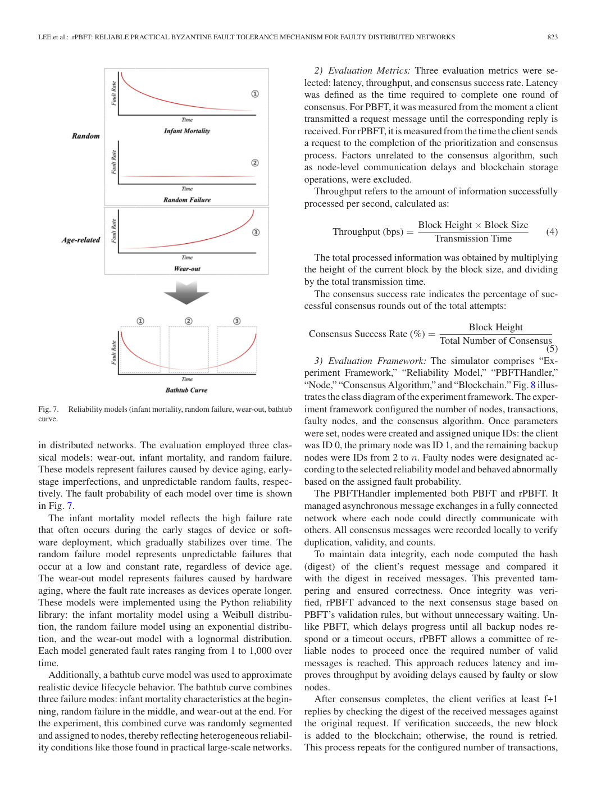
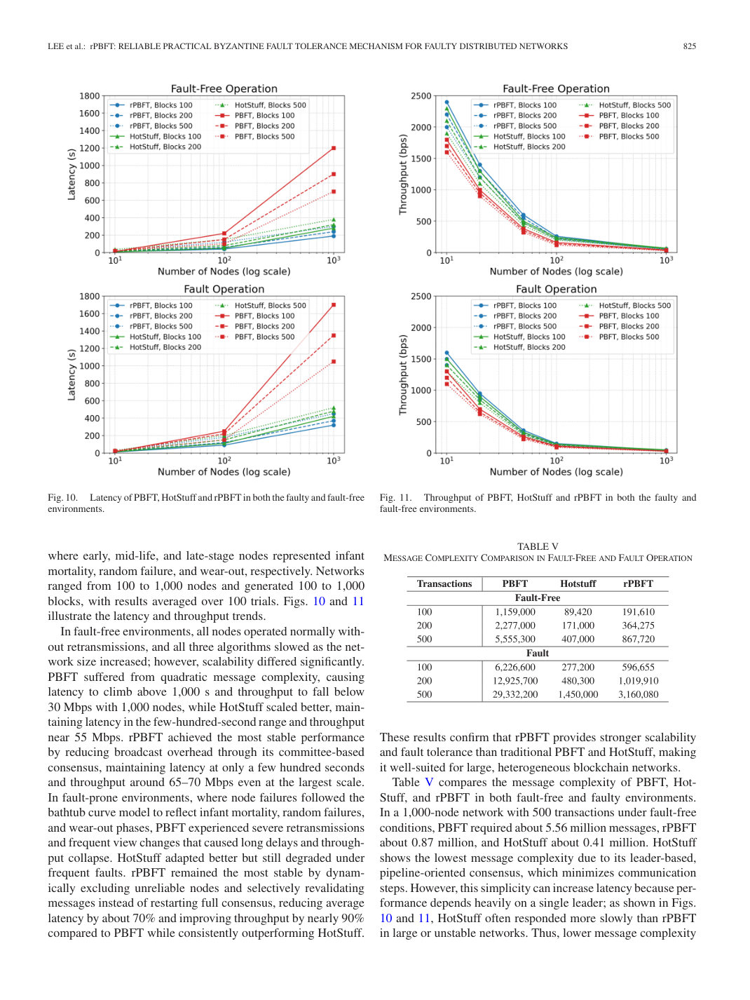
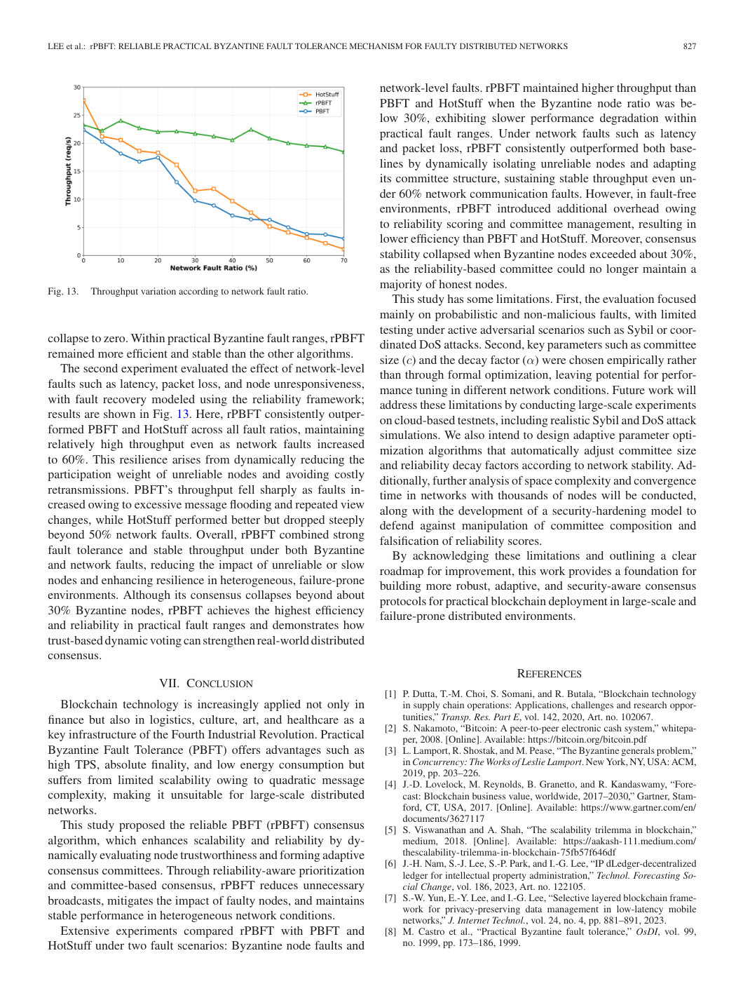

해결해야 한 문제
블록체인 기반 금융 서비스는 중앙 관리자가 없어도 여러 노드가 거래 순서와 원장 상태에 합의해야 합니다. PBFT는 빠른 최종성과 일관성을 제공하지만 노드 수가 늘수록 메시지가 제곱으로 증가하고, 느리거나 일시적으로 고장 난 노드가 합의 지연과 재전송을 키웁니다. 기존 개선안은 악의적 노드나 고정 점수에 집중해 자연 고장의 회복 과정을 충분히 반영하지 못했습니다.
Research / Distributed Ledger
비악의적 장애가 발생한 분산 네트워크에서 합의 성능과 안정성을 함께 비교했습니다.
블록체인 기반 금융 서비스는 중앙 관리자가 없어도 여러 노드가 거래 순서와 원장 상태에 합의해야 합니다. PBFT는 빠른 최종성과 일관성을 제공하지만 노드 수가 늘수록 메시지가 제곱으로 증가하고, 느리거나 일시적으로 고장 난 노드가 합의 지연과 재전송을 키웁니다. 기존 개선안은 악의적 노드나 고정 점수에 집중해 자연 고장의 회복 과정을 충분히 반영하지 못했습니다.
실제 분산 시스템에서는 하드웨어 노후화, 초기 불량, 통신 지연과 패킷 손실처럼 비악의적이고 확률적인 장애가 반복됩니다. 정상 상태의 최고 처리량만 비교하면 이런 환경에서 운영 연속성을 판단하기 어렵습니다.
각 노드의 메시지 유효성과 지연을 이용해 신뢰도를 갱신하고, 신뢰도가 높은 노드로 합의 위원회를 동적으로 구성했습니다. 장애 환경에서 지연 / 처리량 / 합의 성공률을 함께 개선하는 것이 목표였습니다.
최근 PBFT 개선 연구를 leader-committee, multilayer, scoring, division 네 계열로 분류했습니다. 대표 노드가 병목이 되는 구조, 낮은 점수의 영구 배제, 소규모 그룹의 보안 약화와 별도 검증 비용을 비교했습니다.
단일 대표자를 선출하지 않고 각 노드가 동일한 입력으로 같은 위원회를 계산하는 leaderless 구조를 선택했습니다. FSI에 감쇠 / 패널티 / 보상을 적용해 일시적 장애 노드가 회복할 수 있게 하고, 합의 메시지를 전체 n이 아니라 위원회 c에 집중해 복잡도를 O(n²)에서 O(c²)로 줄였습니다.

최대 1,000노드의 완전 연결 네트워크에서 비동기 메시지 지연을 반영한 합의 시뮬레이터를 구현했습니다. prepare / commit 메시지의 유효성과 지연을 FSI로 기록하고, 최근 이력과 네트워크 거리를 사용해 위원회를 재구성했습니다.
초기 고장, 무작위 고장, 마모 고장을 bathtub curve로 조합하고, PBFT / HotStuff / rPBFT를 정상과 장애 조건에서 같은 지표로 비교했습니다.

위원회 축소는 통신량을 줄이지만 신뢰도 계산과 재구성 자체가 비용이며, 작은 위원회는 장애 노드의 영향이 커집니다. 정상 환경의 오버헤드와 장애 환경의 회복 효과를 한 수치로 설명할 수 없었습니다.
노드 / 블록 수, 장애 비율과 부하를 나눠 100회 반복 평균을 비교하고, 지연과 처리량뿐 아니라 합의 성공률, 메시지 수, CPU / 메모리 / 네트워크 사용량을 함께 측정했습니다. 위원회 크기와 감쇠계수도 네트워크 규모별 범위로 제시했습니다.
장애 조건에서 PBFT와 HotStuff 대비 지연시간 30~40% 감소, 처리량 50~80% 향상, 합의 성공률 33% 향상을 확인했습니다. 1,000노드 / 500거래의 장애 조건에서 메시지는 PBFT 약 2,933만 건, rPBFT 약 316만 건이었습니다.
네트워크 장애 비율 60%까지 상대적으로 안정적인 처리량을 유지했지만, 비잔틴 노드가 약 30%를 넘으면 위원회의 정직한 다수가 무너지며 합의가 붕괴했습니다.

모델링한 장애 환경에서는 지연과 처리량, 합의 유지 측면의 목표를 달성했습니다. 정상 환경에서는 FSI 계산과 위원회 관리 비용 때문에 PBFT보다 항상 우수하지 않았습니다.
공동 제1저자로 논문의 문제 전개와 비교 평가 범위를 함께 정교화했습니다. 정상과 장애 환경을 구분하고 성능 / 내결함성 / 자원 비용의 교환관계를 명시한 것이 핵심입니다.
인프라 선택은 평균 처리량보다 어떤 장애를 가정하고 어느 구간에서 회복력을 확보하는지로 평가해야 합니다. 가장 낮은 메시지 수와 가장 낮은 지연이 같은 설계에서 나오지 않는다는 점도 확인했습니다.
평가는 Python 시뮬레이터와 확률적 / 비악의적 장애에 집중했습니다. Sybil, 조직적 DoS, 위원회 담합과 FSI 위조에 대한 대규모 실증은 제한적이며, 위원회 크기와 감쇠계수는 경험적으로 정했습니다.

클라우드 testnet에서 공격 시나리오와 수천 노드의 수렴 / 공간 비용을 검증하고, 네트워크 상태에 따라 위원회 크기와 감쇠계수를 자동 조정하는 방법이 필요합니다.
즉시 최종성과 데이터 일관성이 중요한 허가형 금융 원장의 인프라 후보를 평가할 때, 정상 시점 비용과 장애 시점의 업무 연속성을 분리해 비교하는 기준을 제공합니다. 한화금융 환경에 직접 적용한 결과는 아니며, 노드 운영 주체 / 장애 가정 / 복구 목표를 먼저 정의해야 하는 설계 근거입니다.